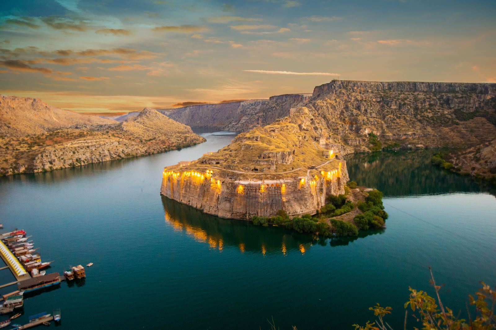

Rumkale - Gaziantep
Rumkale, Fırat Nehri ile Merzimen Çayı’nın birleştiği, yüksek kayalarla örtülü bir tepe üzerinde konumlanmıştır.
Antik Dönem'den günümüze kadar Şitamrat, Kal-a Rhomayta, Hromklay, Ranculat, Kal-at el Rum, Kal-at el Müslimin ve Kale-i Zerrin (Altın Kale) gibi bir çok isimle adlandırılan Rumkale’deki mimari kalıntılar Geç Roma ve Ortaçağ karakteri taşımaktadır.
Kalede bugün görülebilen yapılar arasında Aziz Nerses Kilisesi, Barşavma Manastırı, çok sayıda yapı kalıntısı, su sarnıçları, kuyu ve hendek yer almaktadır.
Roma Dönemi'nde Hz. İsa’nın havarilerinden Yohannes’in Rumkale’ye gelip yerleşmesi ve burada Hıristiyanlık dinini yayması nedeniyle, bu yerleşim yeri Hıristiyanlık tarihinde önemli bir rol oynamaktadır. Yohannes’in, İncil’in kopyasını Rumkale’de bir mağarada sakladığı daha sonra kopyaların buradan alınıp Beyrut’a götürüldüğü anlatılmaktadır.
